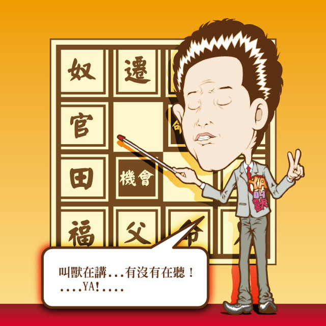

（H2）利用規約をご覧の上、テンプレートをお使いください！
このテンプレートは、商用・非商用にかかわらず無料でお使いいただけます。
ダウンロードの際にはこちらの利用規約を必ずご覧ください。
大いにカスタマイズしていただいて結構なのですが、フッター部分の「Template design by フリー素材 blue-green」の著作権表示部分だけは絶対に削除しないでください。
規約をお守りいただけない場合、発見次第テンプレートの使用中止を勧告の上、違約金を請求いたします
※著作権表示を削除したい場合はライセンス料をお支払いいただく事で取り外し可能です。
こちらのライセンスお申込みフォームよりお問い合わせください。
テンプレートの編集方法サポートについて
 この上のバー↑は<h2＞タグでくくると、背景画像が入ります。
この上のバー↑は<h2＞タグでくくると、背景画像が入ります。
※ <h2>タイトル</h2>のように書きます。
 テンプレートの編集方法については、サポート外となりますのでお問い合わせいただいてもお答えできません。申し訳ございませんがご了承ください。
テンプレートの編集方法については、サポート外となりますのでお問い合わせいただいてもお答えできません。申し訳ございませんがご了承ください。
 サブページについては、「about」フォルダの中に、サブページの見本がありますのでそちらを参考にしてください。
サブページについては、「about」フォルダの中に、サブページの見本がありますのでそちらを参考にしてください。
What's New(h3)
ホームページリニューアルしました。
ホームページリニューアルしました。
ホームページリニューアルしました。